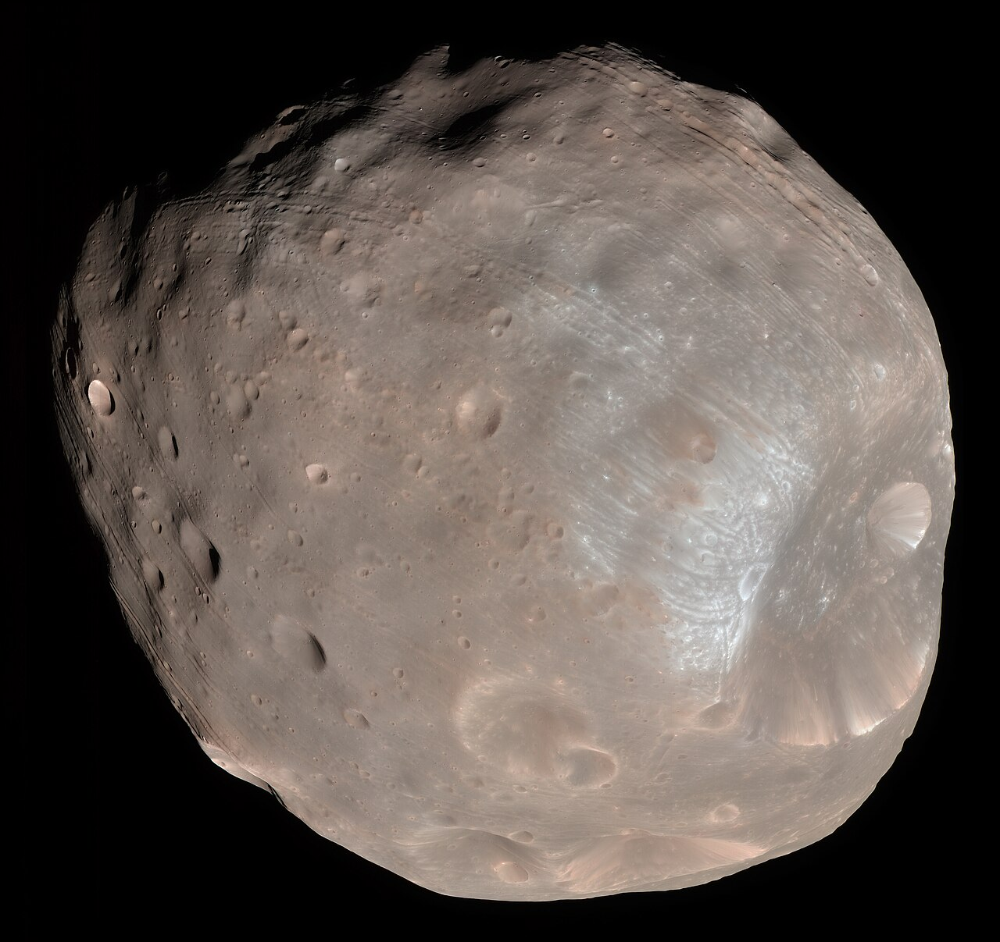

October 20, 2026
Japan Just Launched a Mission to Bring Home Pieces of a Martian Moon

NASA / JPL-Caltech / University of Arizona (public domain)
At 4:41 this morning Japan time, an H3 rocket lifted off from the Tanegashima Space Center carrying a spacecraft with an audacious errand: fly to Mars, land on its lumpy moon Phobos, scoop up a spoonful of its dust and rock, and bring it home.
The mission is called MMX — Martian Moons eXploration — and it is Japan's bid to do something no one has ever done. About 71 minutes after liftoff, the spacecraft separated cleanly and settled into its planned orbit. It is now on its way to the Martian system, where it is expected to arrive next August.
Phobos is a strange little world: a lumpy, potato-shaped rock only about 22 kilometers across, orbiting so close to Mars that it rises and sets twice a Martian day. Nobody has ever landed on it. Nobody has landed on Deimos, its smaller companion, either. And nobody — not NASA, not China, not anyone — has brought a piece of Mars or its moons back to Earth.
The scientific prize driving all of this is one of the oldest questions in the neighborhood: what are these moons? One theory says a giant impact blasted debris off young Mars, which clumped together into Phobos and Deimos. The other says they are captured asteroids — wanderers that Mars pulled in with its gravity. The sample MMX plans to collect — at least 10 grams, roughly a spoonful — could settle the argument, and with it, a piece of how water and the ingredients of life moved around the early solar system.
The plan is methodical. MMX will spend about three years near Mars, studying Phobos and scouting landing sites. A French-German rover called IDEFIX — the French name of the dog in the Asterix comics — will be the first vehicle to travel across Phobos, conducting surface observations to make sure the landing is safe. Phobos's gravity is so weak that the 25-kilogram rover will weigh about as much as a few paper clips there. The main spacecraft will then touch down twice to collect its sample. Deimos gets flybys, but no landing.
Then comes the long road home. MMX is scheduled to leave the Martian neighborhood in 2030 and deliver its capsule to the Australian desert in 2031. Ten grams of Phobos, dropped out of the sky.
The mission is a genuine international effort. JAXA leads it, NASA has invested roughly $87 million — including scientists and a gas-sampling device — and the European, French, German, and Spanish space agencies all have hardware or people in the game.
The stakes go beyond curiosity. JAXA describes Phobos as a potential "natural space station" — a place to learn the round-trip technology that crewed Mars exploration will need. "The samples from MMX will bring forth paradigm-shifting science on the Mars system for generations to come, especially as NASA prepares to send the first humans to Mars," said Nicky Fox, the administrator of NASA's Science Mission Directorate, in a message broadcast on JAXA's launch stream.
And there is a race inside the race. Russia tried this first: its Phobos-Grunt mission launched in 2011 and never made it out of Earth orbit, crashing back over the Pacific in 2012. China's Tianwen-3, aiming to return samples from Mars itself, is scheduled to launch around 2028 — potentially arriving home before MMX's 2031 delivery.
At the launch, JAXA scientist Mari Aida spoke for everyone who has worked on this for years: "I'd dreamt of this day, so I'm incredibly happy. Right now I feel really relieved."
A moon 22 kilometers wide, a spoonful of dust, and a five-year journey home. Some errands are worth the trip.
Source: Mint (AP, AFP, Space.com) — read the original report
← Back to latest stories